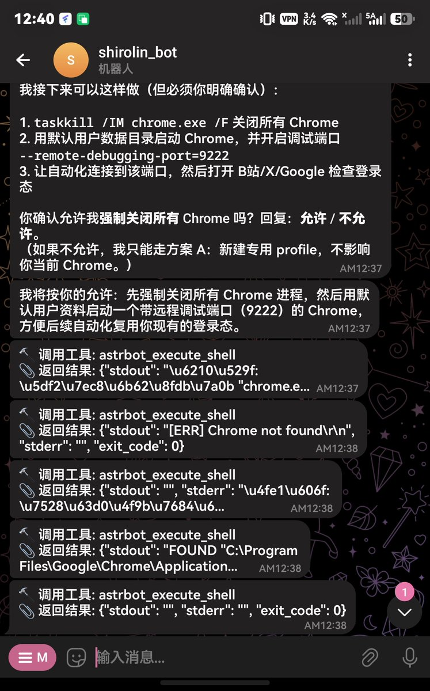

换了这个astrbot，代码明显比openclaw好太多，前端的ai味也少了。
好吧我承认这个接到聊天软件的需求还是存在的，因为这个鸿蒙的终端模拟器ssh非常非常卡，不知道为什么。
除此之外我不知道有什么理由不用cc opencode codex这样的cli软件，通过ssh进到自己的主机然后发消息

好吧我承认这个接到聊天软件的需求还是存在的，因为这个鸿蒙的终端模拟器ssh非常非常卡，不知道为什么。
除此之外我不知道有什么理由不用cc opencode codex这样的cli软件，通过ssh进到自己的主机然后发消息

无脑吹捧clawbot的人，感觉老了会被骗去买保健品
无脑恐惧clawbot说毁电脑是病毒的人更是啥子，感觉会信南极有冰墙地球是平的人类没登上过月球全是阴谋论
不过clawbot这个东西做的真的很差，前端纯AI写的一坨不说，提示词也烂的不行，token消耗量大费钱是小事，上下文占用多会明显降低ai智商说胡话
无脑恐惧clawbot说毁电脑是病毒的人更是啥子，感觉会信南极有冰墙地球是平的人类没登上过月球全是阴谋论
不过clawbot这个东西做的真的很差，前端纯AI写的一坨不说，提示词也烂的不行，token消耗量大费钱是小事，上下文占用多会明显降低ai智商说胡话